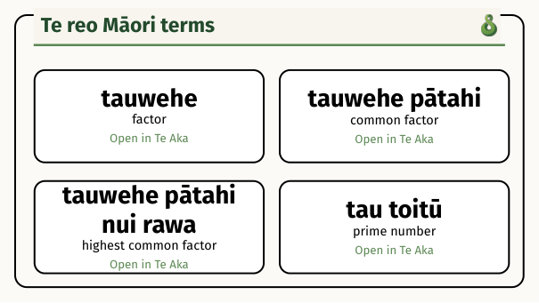
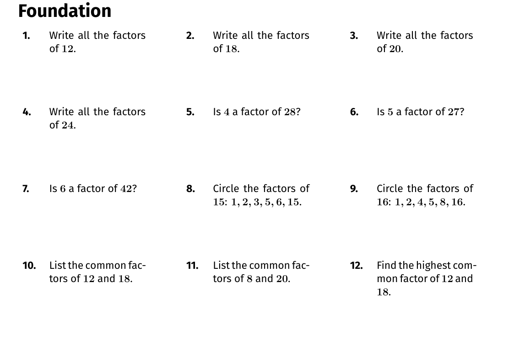
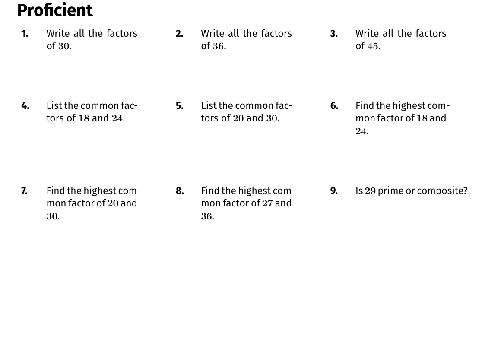
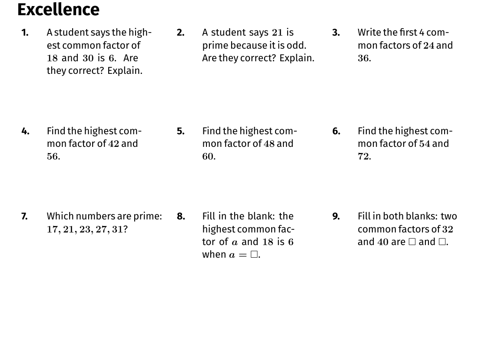

Key skills
- Digit values
Quick stats
- 81 total questions
- 3 difficulty levels
- Answers included
Te reo Māori terms
Key te reo Māori vocabulary for this learning objective.

Foundation
Build confidence with basic digit values, reading and writing numbers, comparing values, and partitioning into tens and ones.

Proficient
Tackle larger numbers, decimals to thousandths, inequality comparisons, ordering multiple values, and full partitioning.

Excellence
Explain misconceptions, justify reasoning, handle 3 d.p. ordering, build numbers from place-value parts, and reason about equivalence.
